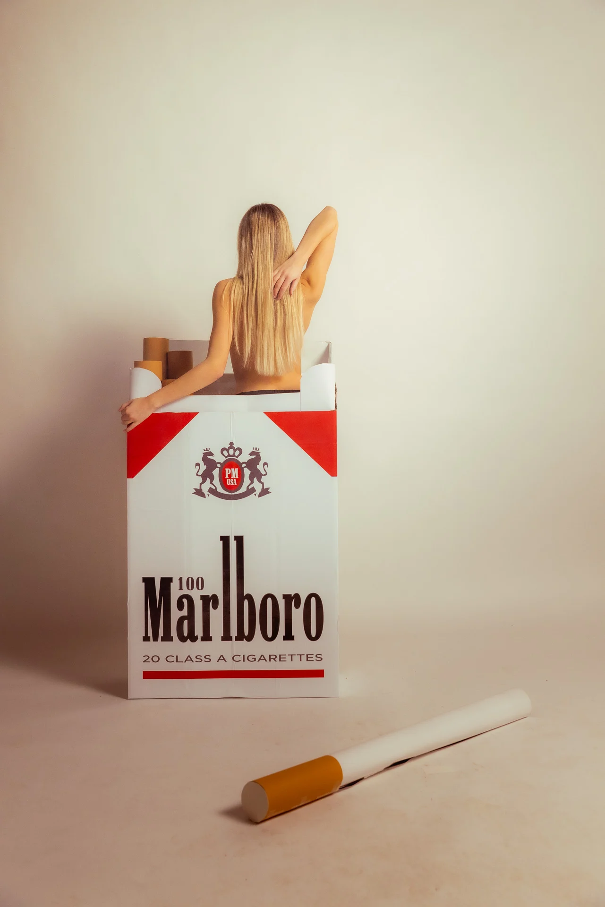
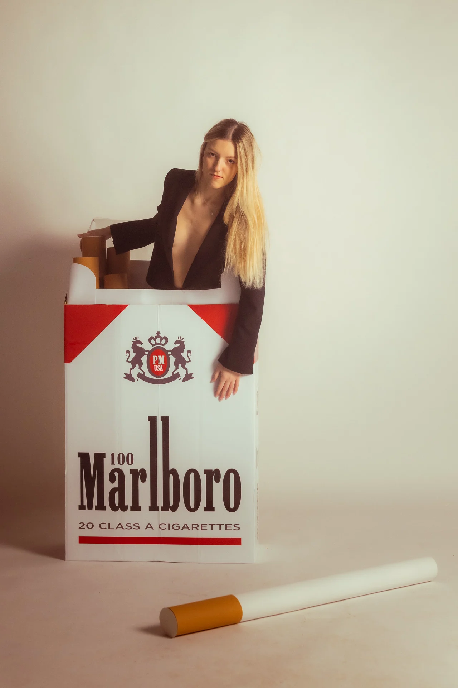
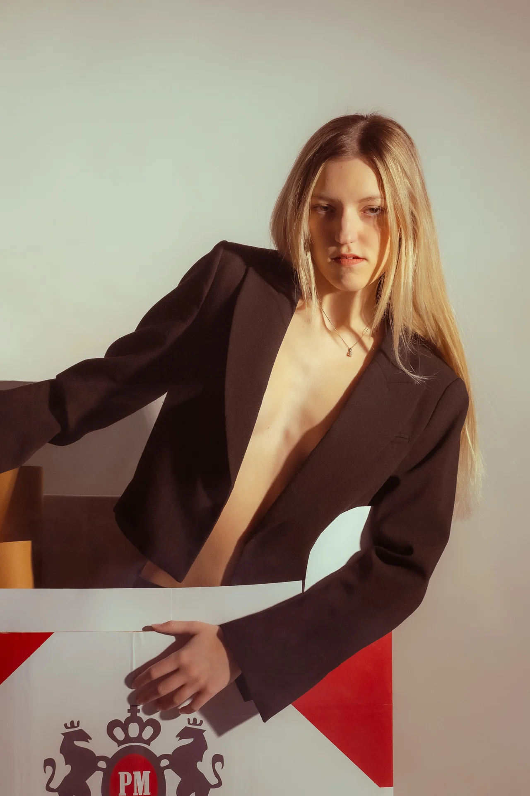

Skip to content
luka00
PHOTOGRAPHY & VISUALS
LJUBLJANA, SLOVENIA
WORK
ABOUT
CONTACT
EN
/
SL
← PORTRAITS
MARLBORO
Editorial portrait study.
Photo
Luka Detiček
Creative
Luka Detiček
Project
Personal editorial
01 / 04

02 / 04

03 / 04

04 / 04
NEXT STORY ↗
Marko The Axe
 01 / 0401 / 04
01 / 0401 / 04